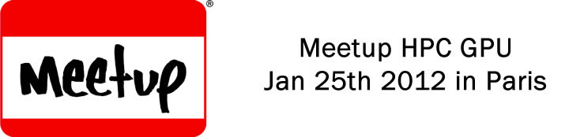

News and events¶
2012/05/17: HPC Project launches the 1.4 version of Par4All¶

HPC Project introduces the 1.4 version of Par4All open parallelization platform extending its scope of processing and generating CUDA and OpenCL code.
This new version introduces enhancements for loop processing for CUDA and OpenCL kernel generations. Moreover, dependencies resulting from accesses to global variables are now more finely analyzed to assess parallelism.
Access the press release in English or French.
For more details please consult the Features page.
2012/05/14: GTC 2012¶

Wild Systems will be at GTC 2012, the GPU Technology Conference from May the 14th to May the 17th in San José (California).
We will be on booth #41 to present the Wild Cruncher appliance. It allows Scilab users to automatically take full advantage of the GPU power. We will also present a beta version of sparse matrix solvers for NVIDIA GPUs as well as Par4All latest version
2012/01/25: Meetup HPC GPU in Paris¶
{kind=link}
On January the 25th 2012, a Meetup of the HPC GPU supercomputing group is held in the Ecole des Mines de Paris. Par4All and HPC Project will be present with a talk by Ronan Keryell on automatic parallelization of C and Fortran for multicores and GPU.
2012/01/13: Wild Cruncher Breakfast February 14th¶

More in formation on http://hpc-project.com/2012/01/13/wild-cruncher-breakfast-february-14th

2011/08/07: Par4All 1.2 is out¶
The new version of Par4All 1.2 has been published on 07/08/2011.
Here is the changelog:
Par4All 1.2
- This version targets mainly the Wild Cruncher, a parallelizing environment from HPC Project for Scilab programs. Par4All is used to parallelize the output of the Scilab-to-C compiler from HPC Project
- Added in examples/Benchmarks some benchmark examples we use in our publications so that anybody can verify Par4All performance on them with own hardware
- Improved support for CUDA atomic update for reductions
- Better deal with scalars in GPU parallelization
- Improved memory effect analysis
- Fixed outlining for kernel generation with scalar parameters
- Improved loop fusion, deal with local variable declarations
- Improved array scalarization
- Make package publication more resilient to network failures
- Fixed GPU code generation for non rectangular iteration spaces
- Fixed communication optimization between GPU and CPU
- Added support for CEA SCMP embedded system
- Installation directory can now be changed also after a first installation
- Use the broker concept to deal with stubs to manage with non or already parallelized libraries
- Now install LICENSE.txt
- Updated to new PyPS interface
- GPU kernel can be outlined in separated source files on demand, for OpenCL or use a separate non C99 compiler (CUDA nvcc), at kernel, launcher, wrapper grain...
- Fixed compilation flags in PIPS/linear to avoid recompilation to fail when an API changes too much
2011/06/14: HPC Project announces Wild Cruncher¶

HPC Project announces its new High Performance appliance, Wild Cruncher, dedicated to numerical simulation users.
The primary goal for Wild Cruncher is to bridge the gap between prototyping and production phases for system engineering. This is made possible through code analysis and optimization technologies on which HPC Project has based its success.
For more information the press announce in English and in French.
2011/05/20: Teratec 2011¶

Par4All will be demonstrated on the HPC Booth at the Teratec Forum on June the 28th and 29th of June 2011. The focus will be on High Performance Computing numerical design and Simulation. It will take place at the École Polytechnique in Palaiseau (Paris area).
2011/05/19: Open GPU 8th of June 2011¶

On the 8th of June 2011, a conference on the theme « OPEN GPU : one year after launching the program » will be held at the Ecole Polytechnique (Palaiseau) in the Amphithéatre Becquerel.
Ronan Keryell will be presenting Par4All.
2011/03/18: HPC Project launches v1.1 Par4All¶

Paris, March 18, 2011 – HPC Project introduces the 1.1 version of Par4All open parallelization platform with automatic code generation for the NVIDIA GPU based hybrid computing architectures. This version brings a significant performance improvement on the execution time of the generated code.
Par4All is the industrial implementation of a technology developed by the teams of CRI/Mines ParisTech and Télécom Bretagne. Its goal is to allow industrial users to meet the challenge of multi-cores architectures and other parallel processors for generic or embedded systems. From a C or FORTRAN application, Par4All automatically generates a parallel code to OpenMP or CUDA (compilable on NVIDIA GPU). The generated code is readable and completely traceable with the original code. The whole process works like a usual compilation.
The code generated with Par4All version 1.1 is significantly faster at execution time. This is due to the new static data-flow analyzer. This new analyzer allows the optimization of the communications between host and GPU as well as allocations to the GPU. Practical examples of applications are available on the Benchmark page.
HPC Project was established in December 2007. HPC Project is a pioneer in developing tools and strategies for high performance computing and code optimization. HPC Project goal is to bring the power of supercomputer on the engineer’s desk.
- Press contact
- roger.marhuenda (at) hpc-project (dot) com
I’ve not been able to have this link working in an image target
2010/12/14: Video showing Par4All features¶
A few explanations on Par4All in a 3mn video

A few explanations on Par4All in a 3mn video
2010/12/06: GTC 2010¶

2010 October 20th to 23rd: come to see the prototype demo at the HPC Project booth at GTC 2010 in San Jose.
2010/12/03: PIPS Tutorial at Bangalore déc¶

2010 September 1st: there was the PIPS tutorial during the PPoPP 2010 conference in Bangalore, India.
2010/12/03: Teratec 2010¶

2010 June 15th to 16th: We will be at the Ter@tec 2010 Forum at École Polytechnique, in Palaiseau, from June 15, 2010 08:30 AM to June 16, 2010 06:00 PM). Ter@tec is the European Pole of Competence in high performance digital simulation
2010/12/03: Open GPU Project¶
2010 March 25th: Kick off of the OpenGPU project (from Mar 25, 2010 08:30 AM to Mar 25, 2010 08:00 PM).
2010/12/03: Nvidia GTC 2009¶
2009 September 30th to October 2nd: Nvidia GTC in San José (Fairmont San Jose 170 South Market Street San Jose, CA 95113, from Sep 30, 2009 12:00 AM to Oct 02, 2009 12:00 AM).

Table Of Contents
- Download - Par4All
- Features
- Benchmarks
- Documentation
- Community
- News and events
- 2012/05/17: HPC Project launches the 1.4 version of Par4All
- 2012/05/14: GTC 2012
- 2012/01/25: Meetup HPC GPU in Paris
- 2012/01/13: Wild Cruncher Breakfast February 14th
- 2011/08/07: Par4All 1.2 is out
- 2011/06/14: HPC Project announces Wild Cruncher
- 2011/05/20: Teratec 2011
- 2011/05/19: Open GPU 8th of June 2011
- 2011/03/18: HPC Project launches v1.1 Par4All
- 2010/12/14: Video showing Par4All features
- 2010/12/06: GTC 2010
- 2010/12/03: PIPS Tutorial at Bangalore déc
- 2010/12/03: Teratec 2010
- 2010/12/03: Open GPU Project
- 2010/12/03: Nvidia GTC 2009
Previous topic
Fortran to OpenCL parallelization